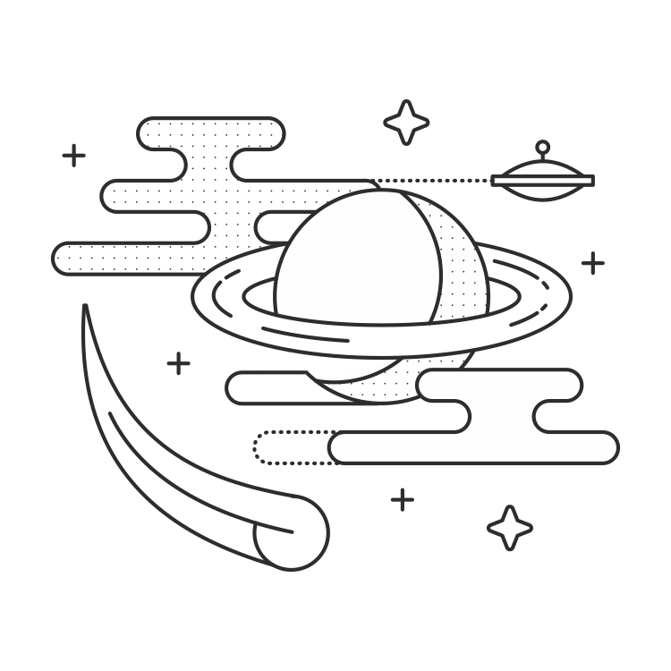

环境

版本控制
选择一个版本控制系统并且使用它。我推荐Git。在我看来，Git是最近新项目最流行的选择。能够删除代码而不用担心造成不可逆的错误是很宝贵的。你可以让你的项目中大量被注释的代码快自由了，因为你现在可以删除它们并且在随后需要的时候恢复这些改变。另外，你将拥有完整的项目备份在GitHub，Bitbucket或者你自己的Gitolite服务上。
避开版本控制
我通常把一个文件放在版本控制之外因为两个原因之一。其中一个是杂乱的东西另一个是秘密的东西。例如编译后的.pyc文件和虚拟环境（如果你因为某些原因没有使用virtualenvwrapper）是杂乱的东西。它们不需要在版本控制中，因为它们可以各自通过.py文件和你的requirements.txt文件被重新创建。
例如API密钥，应用密钥和数据库证书是秘密的东西。它们不应该在版本控制中因为它们的暴露将会造成很大的安全问题。
调试
调试模式
Flask自带一个很好用的功能叫调试模式。你只需要在你的开发配置中设置debug = True就可以打开它。当调试模式打开，服务器将会在代码发生变化时重新加载并且带有堆栈跟踪和交互控制台。
Flask-DebugToolbar
Flask-DebugToolbar是另外一个很棒的工具用来调试你应用中的问题。在调试模式中，它在你的应用中的每一个页面上覆盖一个边栏。这个边栏给你关于SQL查询，日志，版本，模板，配置的信息和其他有趣的东西用来更容易的跟踪问题。
总结
- 使用virtualenv保持你的应用的依赖在一起。
- 使用virtualenvwrapper保持你的虚拟环境依赖在一起
- 保持一个或多个文本文件的追踪依赖。
- 使用版本控制系统。我推荐Git。
- 使用’.gitignore’来让杂乱的东西和秘密的东西置于版本控制之外。
- 调试模式可以给你关于开发中遇到的问题的信息。
- Flask-DebugToolbar扩展将给你更多的信息。